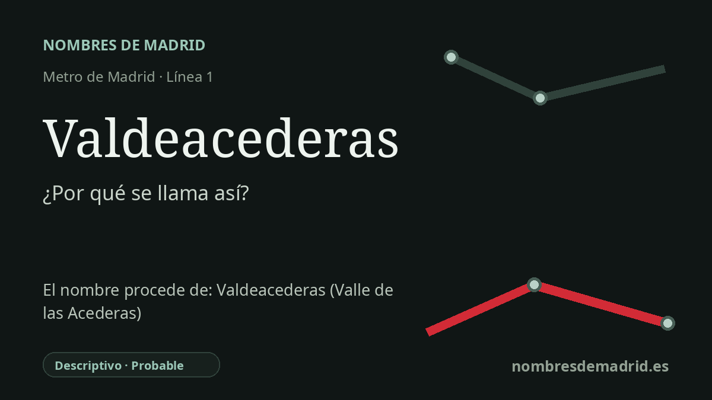

Publicado el · Investigación de Nombres de Madrid · Cómo verificamos cada origen · 8 fuentes consultadas
Respuesta rápida
Valdeacederas conserva el nombre de una antigua calle y de un topónimo local, sustituido después en el callejero por Capitán Blanco Argibay. Lingüísticamente se interpreta como 'valle de las acederas', de val, 'valle', y acederas, plantas de sabor ácido.
La historia del nombre
La estación de Valdeacederas toma su nombre de una denominación local antigua, no de una dedicatoria moderna. La parada está en la línea 1, bajo Bravo Murillo, con accesos por la calle del Capitán Blanco Argibay y la calle de Aníbal, pero el nombre Valdeacederas conserva la antigua calle y el antiguo topónimo que identificaban esta parte de Tetuán.
La palabra es un topónimo rural muy concentrado. La Real Academia Española define val como apócope de valle, y acedera como una planta perenne de la familia de las poligonáceas usada como condimento por su sabor ácido. Leído literalmente, Valdeacederas significa algo parecido a 'valle de las acederas' o 'valle donde crecen acederas'.
El nombre antiguo está documentado antes de la estación de Metro. Una crónica histórica local señala que Valdeacederas y su camino aparecen vinculados a tierras de labor antes de la urbanización completa de la zona, y con más frecuencia desde mediados del siglo XIX por las obras del Canal de Isabel II. Un anuncio oficial de 1959 en el Boletín Oficial del Estado todavía describía una finca en Chamartín de la Rosa en la calle del Capitán Blanco Argibay, 'antes Valdeacederas', lo que muestra que el nombre anterior seguía siendo reconocible tras el cambio oficial.
Ese cambio es importante para entender la estación. La calle fue renombrada en 1949 en honor de Ricardo Blanco Argibay, pero cuando Metro prolongó la línea 1 al norte desde Tetuán hasta Plaza de Castilla, la estación intermedia abrió el 4 de febrero de 1961 como Valdeacederas. Así, el nombre ferroviario conservó un topónimo local que el callejero había desplazado en parte.
La conclusión más prudente es que la estación se llama así por la histórica calle o topónimo Valdeacederas, probablemente con el sentido de 'valle de las acederas'. La base lingüística es fuerte y la continuidad del nombre de la calle está bien documentada. El detalle pintoresco de que las acederas crecieran abundantemente justo en esa zona baja es plausible, pero sigue siendo una inferencia sin una fuente catastral, agrícola, cartográfica o archivística directa.